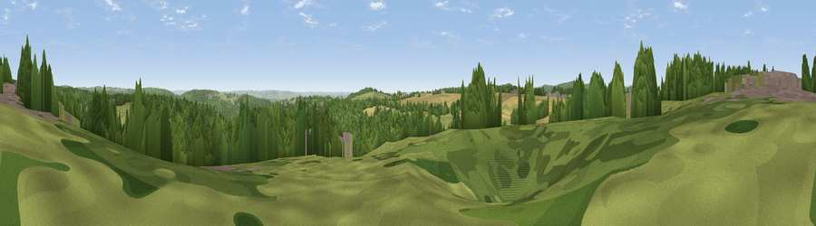

Viewpoint near Sling
#27701 in England · top 57% of its area beats it · near SlingThe view, rendered

A 360° render of this exact spot computed from the terrain model, tree cover and land cover — summer colours, afternoon light, calibrated against photographs of famous viewpoints. Real trees, hedges and buildings will differ in detail.
The panorama
Grey silhouette: terrain skyline in each direction (720 bearings, Earth curvature and refraction included). Dashed green: skyline with trees (+15 m) and buildings (+8 m) as obstacles. Blue strip: how far the ground is visible on each bearing.
Where the view opens
Wedge length = distance to the farthest visible ground on that bearing (vegetation-aware). Rings at 10, 25 and 50 km.
What fills the view
54% woodland · 29% grassland · 14% cropland · 3% built-up
Angular shares of the visible panorama (visual magnitude), not map area. Landscape diversity 0.46 (0–1 Shannon).
Key numbers
More beautiful places nearby
The staircase of upgrades: each row has a higher view potential than everything closer. Driving times are estimates from straight-line distance, calibrated against real road routing — check an actual route before setting out.
| Place | Direction | Drive | Score |
|---|---|---|---|
| Viewpoint near Whitecliff | NW · 2 km | ~6 min | 46.5 |
| Viewpoint near Bream | SE · 3 km | ~8 min | 58.7 |
| Viewpoint near Aylburton | SSE · 5 km | ~11 min | 68.8 |
| Viewpoint near Hewelsfield | S · 5 km | ~12 min | 69.4 |
| Viewpoint near Yorkley | E · 5 km | ~12 min | 70.9 |
| Buck Stone | NW · 6 km | ~13 min | 71.0 |
| Viewpoint near Ruardean | NNE · 11 km | ~20 min | 74.2 |
| Skenchill | NW · 15 km | ~27 min | 75.8 |
51.76485, -2.60456 · source: screening · position refined by local search. Computed location — check access rights before visiting.